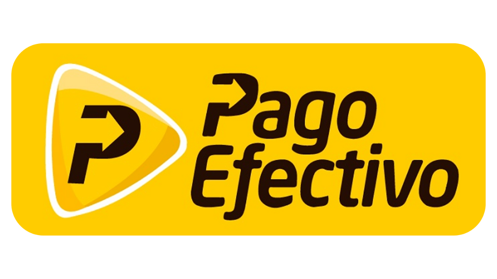
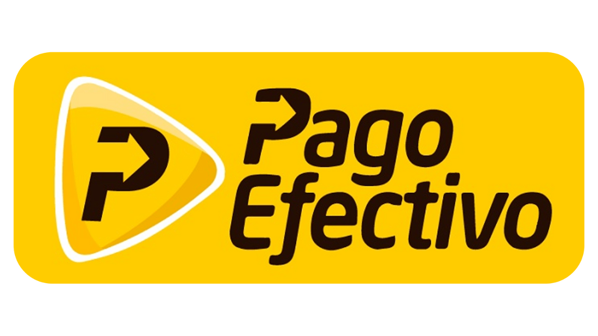

🎁 Oferta especial

53 € ~265 €~
💥 80% de descuento
⏳ ¡Esta oferta termina en 2 horas! ÚLTIMOS CUPOS DISPONIBLES
🎁 Bonos exclusivos al inscribirte hoy
- ✅ Bono #1: 🏅 Certificado digital.
- ✅ Bono #2: 🧠 Framework listo para usar en tus proyectos.
- ✅ Bono #3: 💬 Acceso a comunidad privada.
- ✅ Bono #4: 💻 Clases grabadas para siempre.
- ✅ Bono #4: 🤝 Acceso a grupo exclusivo de WhatsApp.
- ✅ Bono #4: 🔄 Actualizaciones gratuitas.
Garantía de 7 días!
Métodos de pago disponibles:


 
